第 17 章 Analysis 分析与报告¶
本章目标
- 会打开 Controller 的运行结果，认得 Analysis 的界面；
- 读得懂摘要报告：统计信息、事务表、SLA 状态、HTTP 状态码；
- 会添加图，知道几张常用的图各自回答什么问题；
- 会用筛选只看稳定的那段时间，会调粒度，会把两张图合并起来看；
- 会用交叉结果对比两次运行；
- 会导出 HTML 报告；
- 会把结果导出成数据，用脚本统计、按阶梯分档、对照 SLA 自动判断；
- 知道一份性能测试报告应该写些什么。
第 16 章跑完了 demo16：10 个虚拟用户，每 10 秒加 2 个，加满后跑 3 分钟。Controller 的运行视图只能边跑边看个大概，跑完以后的分析在 Analysis 里做：它把结果目录里的原始数据整理成摘要报告和各种图，还能筛选、合并、对比、导出报告。本章用 demo16 的结果把 Analysis 常用的功能走一遍，最后讲怎么用脚本处理结果、怎么写测试报告。
本章的截图和数字来自作者那次运行的结果 demo16_1；你的结果和这里不完全一样是正常的。
17.1 打开结果¶
17.1.1 三种打开方式¶
| 方式 | 怎么做 |
|---|---|
| 从 Controller 打开 | 场景跑完后，点菜单 结果 → 分析结果，Analysis 启动并打开这次的结果 |
| 从开始菜单打开 | 开始菜单 → Micro Focus → LoadRunner → Analysis，再点 文件 → 打开，找到结果目录里的 .lrr 文件 |
| 命令行 | & "$env:LR_PATH\bin\AnalysisUI.exe" -RESULTPATH D:\work\lr-results\demo16\demo16.lrr，效果和前两种一样，打开窗口并载入结果 |
打开结果时 Analysis 要先把原始数据处理一遍，结果越大等得越久。
17.1.2 界面¶
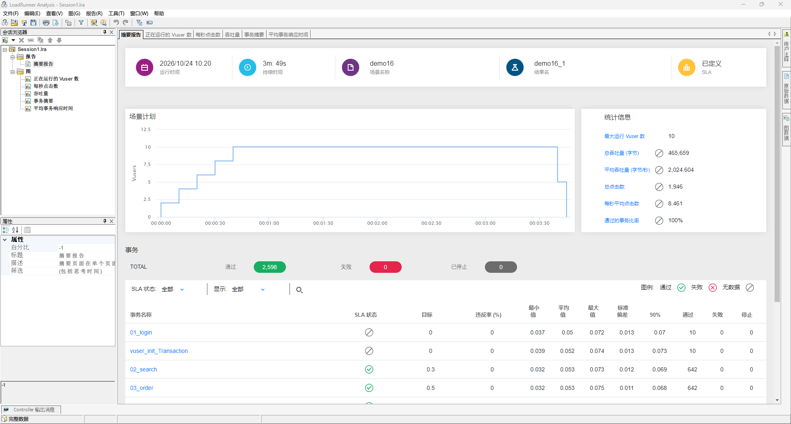
| 区域 | 位置 | 干什么 |
|---|---|---|
| 会话浏览器 | 左上 | 一棵树：「报告」下是摘要报告，「图」下是已经打开的图。点哪个就显示哪个 |
| 属性 | 左下 | 当前这张图或报告的属性，比如粒度、筛选条件 |
| 标签页 | 中间上方 | 和会话浏览器里的项目一一对应，点标签也能切换 |
| Controller 输出消息 | 左下角的按钮 | 运行时 Controller 收到的消息，比如脚本里 lr_error_message 写的错误 |
菜单栏是 文件、编辑、查看、图、报告、工具、窗口、帮助。本章用到的命令都在 文件、查看、图、报告 四个菜单里。
默认打开时除了摘要报告，还自动加了五张图：正在运行的 Vuser 数、每秒点击数、吞吐量、事务摘要、平均事务响应时间。
17.1.3 会话¶
Analysis 把你打开的图、设的筛选条件存成一个会话，文件扩展名是 .lra，默认名字是 Session1.lra，窗口标题上显示的就是它。关闭 Analysis 时会问「是否保存当前的 Analysis 会话？」，选「是」弹出「保存分析会话」对话框，默认位置是「文档」文件夹。建议存到结果目录里，比如 D:\work\lr-results\demo16\demo16.lra，和结果放在一起；下次用 文件 → 打开 打开这个 .lra，加过的图和筛选都还在。选「否」就不保存，下次打开结果又是默认的那几张图。
17.2 摘要报告¶
摘要报告是打开结果后第一个看到的页面，从上到下分几块。
17.2.1 顶部和统计信息¶
顶部五格：运行时间（场景开始的日期和时间）、持续时间、场景名称、结果名、SLA（定义了 SLA 显示「已定义」）。下面左边是场景计划的曲线，右边是统计信息：
| 项目 | demo16 | 意思 |
|---|---|---|
| 最大运行 Vuser 数 | 10 | 同时在跑的虚拟用户最多有几个 |
| 总吞吐量 (字节) | 465,659 | 服务器返回的数据一共多少字节 |
| 平均吞吐量 (字节/秒) | 2,024.604 | 总吞吐量除以持续时间 |
| 总点击数 | 1,946 | HTTP 请求一共多少次 |
| 每秒平均点击数 | 8.461 | 总点击数除以持续时间 |
| 通过的事务比率 | 100% | 通过的事务占全部事务的比例 |
每秒平均点击数 8.461 比运行视图里满载时的 9.60 小，因为它是全程的平均：开头 40 秒在加压、最后几秒在减压，用户没有满。Analysis 计算时用的持续时间是 230 秒（比显示的 3 分 49 秒多 1 秒），1946 ÷ 230 ≈ 8.46，平均吞吐量 465,659 ÷ 230 ≈ 2,024.6 也是这么算的。要看满载时的数字，用 17.5 节的筛选只看中间那段。
定义了 SLA 时，统计信息里除了最大运行 Vuser 数，其余五项的数值前面多了一个带斜线的圆圈 ⊘，表示这一项没有设 SLA，也就是「无数据」。
17.2.2 事务表¶
事务表上面先是三个总数：通过 2,598、失败 0、已停止 0，和 Controller 运行视图里的数字一致。下面每个事务一行：
| 事务名称 | 最小值 | 平均值 | 最大值 | 标准偏差 | 90% | 通过 | 失败 | 停止 |
|---|---|---|---|---|---|---|---|---|
| 01_login | 0.037 | 0.05 | 0.072 | 0.013 | 0.07 | 10 | 0 | 0 |
| vuser_init_Transaction | 0.039 | 0.052 | 0.074 | 0.013 | 0.073 | 10 | 0 | 0 |
| 02_search | 0.032 | 0.053 | 0.073 | 0.012 | 0.069 | 642 | 0 | 0 |
| 03_order | 0.032 | 0.053 | 0.075 | 0.011 | 0.068 | 642 | 0 | 0 |
| 04_pay | 0.032 | 0.052 | 0.081 | 0.012 | 0.068 | 642 | 0 | 0 |
| Action_Transaction | 0.106 | 0.158 | 0.214 | 0.02 | 0.184 | 642 | 0 | 0 |
| vuser_end_Transaction | 0.002 | 0.002 | 0.002 | 0 | 0.002 | 10 | 0 | 0 |
时间的单位都是秒。几列的意思：
- 平均值：所有通过的事务的平均响应时间；
- 标准偏差：响应时间的波动大小，越小越稳定；
- 90%：把这个事务的所有响应时间从小到大排好，排在第 90% 位置的那个值。02_search 的 90% 是 0.069，就是说 90% 的搜索在 0.069 秒内完成。第 13 章说过要看百分位数，不能只看平均值；
- 通过、失败、停止：事务的个数。停止是场景结束时还没做完、被中途停下的事务。
Action_Transaction 的平均值是 0.158 秒，约等于 02_search、03_order、04_pay 三个平均值之和：Analysis 计算响应时间时扣掉了思考时间，三次 1 秒的 lr_think_time 不算在里面。第 16 章运行视图里看到的 3.2 秒是没扣的。
坑
摘要报告的筛选写着「(包括思考时间)」。 选中摘要报告时，左下角属性窗格的「筛选」一项显示「(包括思考时间)」，HTML 报告（17.9 节）的摘要页也是这么写的；而 HTML 报告里几张事务图的筛选写的是「(未包括思考时间)」。从 Action_Transaction 只有 0.158 秒来看，摘要里的数字并没有包括思考时间。以数字为准。
17.2.3 SLA 列¶
定义了 SLA 的结果，事务表多出三列，表头上面也多了一个「SLA 状态」筛选：
| 列 | 意思 |
|---|---|
| SLA 状态 | 绿色的勾是通过，红色的叉是失败，带斜线的灰色圆圈 ⊘ 是没有设 SLA（无数据） |
| 目标 | SLA 里设的阈值，02_search 是 0.3，03_order、04_pay 是 0.5 |
| 违反率 (%) | 违反 SLA 的比例，demo16 的三个事务都没有违反，全是 0 |
demo16 的三个业务事务都通过了：P95 都在 0.07 秒左右，离阈值很远。10 个用户的压力太小了，第 18 章把压力加上去再看。
17.2.4 HTTP 响应¶
摘要报告最下面是 HTTP 状态码的统计，每种状态码一行：总计和每秒。demo16 只有 HTTP_200 一种，1,946 次。出现 4xx、5xx 时这里一眼就能看到，第 18 章 18.5 节同一账号多处登录的实验就出了一千多个 401。
17.3 图¶
17.3.1 平均事务响应时间¶
点「平均事务响应时间」标签：
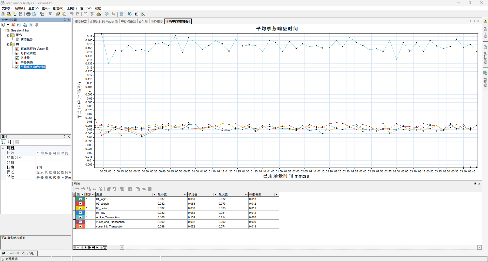
横轴是场景开始后的时间，纵轴是响应时间（秒），每个事务一条线。最上面那条是 Action_Transaction，在 0.16 秒上下；三个业务事务挤在 0.05 秒附近。下面的图例每条线一行：颜色、比例、度量（事务名）、最小值、平均值、最大值、标准偏差，这几个数和摘要报告事务表里的一致。取消某一行前面的勾，图上就不画这条线。
左下角属性窗格里的「粒度」是 4 秒：图上的每个点是 4 秒内的平均值（17.6 节）。
17.3.2 常用的图¶
| 图 | 在打开新图里的位置 | 回答什么问题 |
|---|---|---|
| 正在运行的 Vuser 数 | Vuser | 每个时刻有多少用户在跑，计划有没有按设计执行 |
| 每秒点击数 | Web 资源 | 服务器每秒收到多少请求。压力加上去了，它有没有跟着涨 |
| 吞吐量 | Web 资源 | 服务器每秒返回多少字节，和每秒点击数一起看网络有没有成为瓶颈 |
| 平均事务响应时间 | 事务 | 每个事务的响应时间随时间怎么变 |
| 每秒事务数 | 事务 | 每秒完成多少个事务，相当于每个业务操作的吞吐量 |
| 事务摘要 | 事务 | 每个事务通过、失败、停止各多少，是柱状图 |
| 事务响应时间(百分比) | 事务 | 百分位数：P90、P95、P99 各是多少 |
| Windows 资源 | 系统资源 | 场景里加了 Windows 资源监控（第 16 章 16.8 节）才有，看服务器的 CPU 等 |
| 错误统计 (按描述) | 错误 | 有错误时才有，按错误信息分类计数 |
17.4 添加图¶
点菜单 图 → 添加新图（Ctrl+A），弹出「打开新图」对话框：
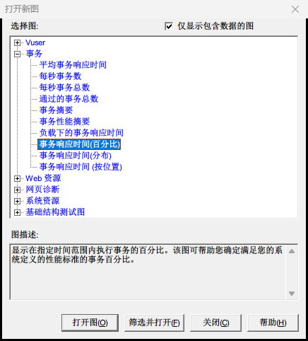
上面是图的分类，展开选一张，下面的「图描述」会说明这张图显示什么，再点「打开图」，最后点「关闭」。「仅显示包含数据的图」默认勾着，所以只有这次运行有数据的图才会列出来：demo16 加了 Windows 资源监控，所以有「系统资源」这一类；没有出错，就没有「错误」这一类。
打开「事务」下的「事务响应时间(百分比)」：
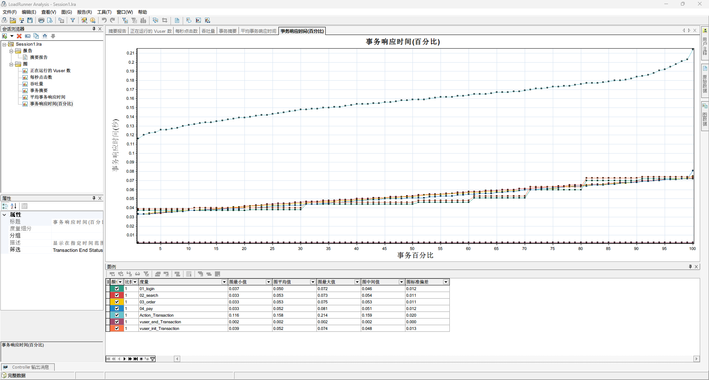
横轴是事务百分比，纵轴是响应时间。每条线是把这个事务的响应时间从小到大排好后画出来的，所以都是往右上升的。在横轴 95 的位置往上看，就是每个事务的 P95：三个业务事务都在 0.07 秒左右；Action_Transaction 那条最高，到 100% 时是它的最大值 0.214 秒。曲线在右端突然往上翘，说明有少数请求特别慢，翘得越厉害，平均值越掩盖问题。
这张图的图例列的是图最小值、图平均值、图最大值、图中间值、图标准偏差，和平均事务响应时间那张图的不太一样。
17.5 筛选：只看稳定的一段¶
加压和减压的那段时间，在跑的用户数不是 10，算进去会把平均数拉偏。要看满载时的表现，就要只看中间那一段。
- 切到「平均事务响应时间」，点菜单 查看 → 设置筛选/分组方式（Ctrl+T），弹出「图设置」对话框。上半部分是筛选条件，每个条件一行，「事务结束状态」默认是 = Pass；下半部分是分组方式；
- 在「场景已用时间」那一行，点「值」那一格，格子右边出现一个下拉箭头，点它弹出「场景已用时间」对话框。默认的范围是整个运行时间，改成从 000:01:00 到 000:03:30（时:分:秒），点「确定」：
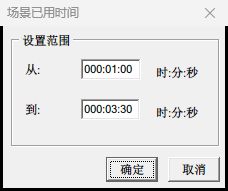
- 回到图设置，值那一格显示「自: 000:01:00 到: 000:03:30」，点「确定」：
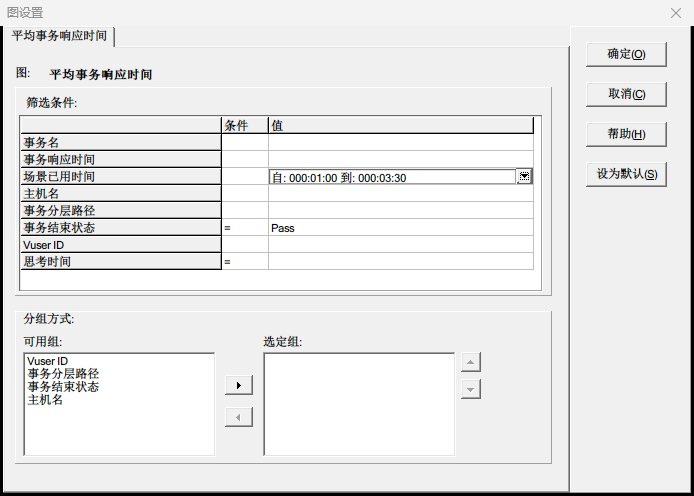
图上只剩 1 分钟到 3 分 30 秒的数据，图例里的数字也变了：
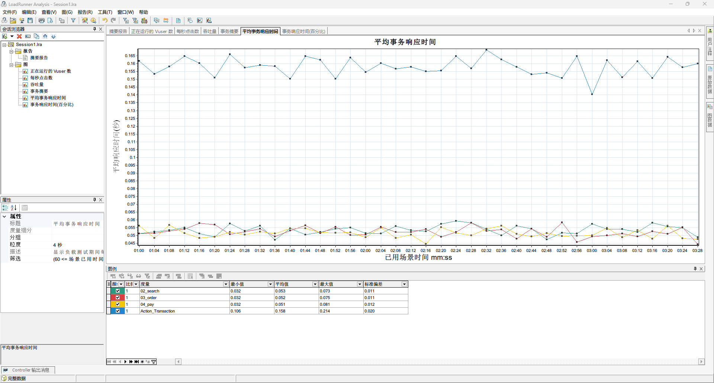
02_search、03_order、04_pay 的平均值是 0.053、0.052、0.051 秒，Action_Transaction 是 0.158 秒。01_login、vuser_init_Transaction 发生在开头加压的那 40 秒里，vuser_end_Transaction 在最后，它们都被筛掉了。左下角属性窗格的「筛选」一项也变成了以「(60 <= 场景已用时间」开头的条件。
筛选条件还有这些常用的：
| 条件 | 用途 |
|---|---|
| 事务名 | 只看某几个事务。点值那一格的下拉箭头，在弹出的列表里勾选 |
| 事务结束状态 | 默认是 = Pass，只统计通过的事务 |
| Vuser ID | 只看某几个虚拟用户 |
下半部分的「分组方式」把数据按选定的条件分成几组，每组画一条线。
这样设的筛选只对当前这一张图有效。要让所有的图都用同一个筛选，用 文件 → 设置全局筛选（Ctrl+B）。
17.6 粒度¶
图上的每个点是一小段时间内的平均值，这一小段时间叫粒度。Analysis 会按结果的长短自动选一个，demo16 是 4 秒。改粒度：点菜单 查看 → 设置粒度（Ctrl+G）：
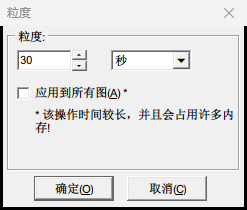
| 粒度 | 效果 |
|---|---|
| 小（几秒） | 曲线细节多、锯齿大，短暂的抖动都看得到 |
| 大（几十秒） | 曲线平滑，能看出趋势，短暂的高峰会被平均掉 |
对话框里的「应用到所有图」旁边有个提示：该操作时间较长，并且会占用许多内存。一般只改当前这张图就够了。第 18 章找拐点时，每秒点击数的图把粒度从 8 秒调到 30 秒，锯齿没了，能清楚地看出每秒点击数涨到 160 左右就不再涨。
17.7 合并图¶
单看一张图，只知道「响应时间在 2 分钟时变长了」；把它和「正在运行的 Vuser 数」合在一起，才能看出「用户加到 30 个时响应时间开始变长」。先切到平均事务响应时间这张图，点菜单 查看 → 合并图（Ctrl+M），在「选择要与其合并的图」里选「正在运行的 Vuser 数」，合并类型选「叠加」，点「确定」：
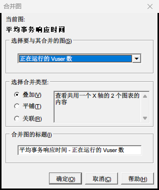
| 合并类型 | 效果 |
|---|---|
| 叠加 | 两张图画在一起，共用横轴，右边多一根纵轴给第二张图用 |
| 平铺 | 上下排开，共用横轴 |
| 关联 | 横轴换成第二张图的数值，比如横轴是 Vuser 数、纵轴是响应时间，直接看响应时间随用户数怎么变 |
平铺和关联两种的说明来自官方帮助，本教程只用叠加。
合并以后，会话浏览器里多出一张「平均事务响应时间 - 正在运行的 Vuser 数」。demo16 的用户数在 40 秒后就不变了，响应时间也一直平稳，合起来看不出什么；第 18 章阶梯加压的结果，用这张合并图一眼就能看出拐点。
17.8 交叉结果¶
调优以后要和调优前比，就要把两次运行的结果放在一起看。点菜单 文件 → 交叉结果：
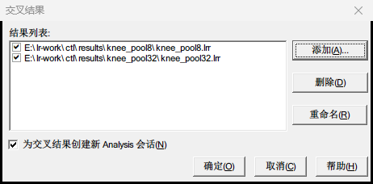
- 点「添加」，选另一次运行的 .lrr 文件，列表里就有了两个结果；
- 「为交叉结果创建新 Analysis 会话」默认勾着：对比结果放在一个新的会话里，不改动原来的会话；
- 点「确定」。
交叉会话的摘要报告把两个结果并排列出来：统计信息每个结果一列，事务表里每个事务分成两行，一个结果一行。图里的每条线后面带着结果名，比如「02_search:knee_pool32.lrr」。在图设置的筛选条件里多了一个 Result Name，可以只看某一个结果。第 18 章用它对比调大连接池前后的两次运行。
17.9 HTML 报告¶
要把结果发给别人看，最方便的是 HTML 报告，对方用浏览器就能打开，不用装 LoadRunner。
- 点菜单 报告 → HTML 报告，弹出「选择报告文件名和路径」的保存对话框；
- 默认的文件名是 Report.htm，位置是临时文件夹。换到结果目录旁边，比如
D:\work\lr-results\demo16_report\Report.htm（先建好 demo16_report 文件夹）； - 点「保存」。
生成的是一个 Report.htm 和一个同名的 Report 文件夹，两个要放在一起发。用浏览器打开 Report.htm：
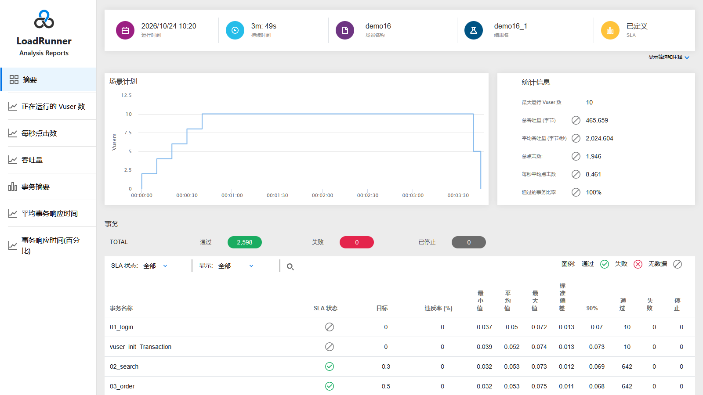
左边是目录：摘要和会话里打开的每一张图；右边是内容，摘要和 Analysis 里的摘要报告基本一样。点开一张图，页面上方写着这张图的筛选条件和粒度，中间是图，下面是图例表格。右上角的「在 Excel 中打开」打开的是这张图的数据，Report 文件夹里每张图都有一个 CSV 文件（Report0.csv、Report1.csv……），可以拿去再加工。
HTML 报告里有哪些图、每张图是什么样，取决于生成报告时会话里打开了哪些图、设了什么筛选。上面这份报告是在 17.5 节设好筛选以后生成的，所以里面的平均事务响应时间只有第 1 分钟到第 3 分 30 秒。先把要看的图都加好、筛选设好，再生成报告。
坑
文件名写成正斜杠的路径会报「文件名无效」。 在保存对话框的文件名框里直接写路径时，要用反斜杠，比如 D:\work\lr-results\demo16_report\Report.htm。
报告菜单里还有「新建报告」「报告模板」，可以按模板生成格式更完整的报告，本教程不展开。
17.10 用脚本处理结果¶
17.10.1 为什么要导出数据¶
Analysis 适合人看，下面几件事用它就不方便：
- 阶梯加压要按每一档分别统计（第 18 章），在 Analysis 里要一档一档地设筛选、抄数字；
- 同样的统计每次都要做，想写成脚本一键得出；
- 第 19 章的流水线要自动判断「这次压测通过没有」，第 16 章说过 Wlrun.exe 的退出码靠不住。
LoadRunner 自带一个命令行工具 LrRawResultsExporter.exe，能把结果目录里的原始数据导出成 JSON 文件。
17.10.2 导出¶
在 PowerShell 里执行：
> $p = Start-Process "$env:LR_PATH\bin\LrRawResultsExporter.exe" -ArgumentList "-source_dir", "D:\work\lr-results\demo16", "-target_dir", "D:\work\lr-results\demo16\raw_json", "-to_json", "-f", "-silent" -Wait -PassThru
> $p.ExitCode
0
| 参数 | 意思 |
|---|---|
-source_dir |
结果目录 |
-target_dir |
导出到哪个文件夹，不存在会自动创建 |
-to_json |
导出成 JSON |
-f |
覆盖目标文件夹里已有的文件 |
-silent |
安静运行，不弹界面 |
它和 Wlrun.exe 一样是窗口程序。用 & 直接运行时，实测命令行立刻就返回了，退出码是空的，过一会儿文件才出来；所以要用 Start-Process 加 -Wait，等它导出完。本章的结果导出只要 1 秒。
坑
不要用 -help 查看帮助。 实测加 -help 会弹出一个图形窗口，命令行一直卡在那里。
导出的文件夹里主要有这几个文件：
| 文件 | 内容 |
|---|---|
| RawData.txt | 每一次事务的记录、部分请求的耗时细分、HTTP 状态码的计数、压测机自己的 CPU 和内存，一条一行 |
| offline.txt | Windows 资源等监控数据（场景里加了监控才有内容） |
| _t_rep.txt | 虚拟用户状态的变化和在跑的用户数 |
| RunInfo.txt | 场景开始、结束的时间和时区 |
RawData.txt 里一条事务长这样（计算机名换成了 PC01）：
{"Transaction":{"Timestamp":"1792837222958901760","Name":"01_login","ScriptName":"shop_order","GroupName":"shop_order","VuserID":"1","Status":"passed","HostName":"PC01","Emulation":"N/A","StartTime":"1792837222914621","EndTime":"1792837222958902","ThinkTime":"0","WastedTime":"170"}},
StartTime、EndTime、ThinkTime、WastedTime 的单位都是微秒，Timestamp 是纳秒。和 Analysis 一样的响应时间是：
响应时间（秒）=（EndTime − StartTime − ThinkTime − WastedTime）÷ 1000000
WastedTime（浪费时间）是 LoadRunner 自己做统计、记日志这类事花的时间，真实用户的浏览器不会花这个时间，所以不算在响应时间里。这一条就是 (1792837222958902 − 1792837222914621 − 0 − 170) ÷ 1000000 = 0.044 秒。
说明
注意：导出的数据里有你的计算机名和 IP 地址。 监控数据的 Host 一项是「计算机名 [局域网 IP]」，事务的 HostName 是计算机名。把导出的数据发给别人之前想一想要不要去掉。
17.10.3 用 lr_summary.py 汇总¶
参考代码的 tools/lr_summary.py 把导出和统计做成了一步，口径和 Analysis 摘要报告一致。在工程根目录执行：
> python tools/lr_summary.py D:\work\lr-results\demo16
结果 demo16，场景持续 229 秒，统计全程
HTTP 状态码：200 共 1946 次
| 事务 | 通过 | 失败 | 停止 | 最小 | 平均 | 最大 | 标准偏差 | 90% | 每秒通过 |
|---|---:|---:|---:|---:|---:|---:|---:|---:|---:|
| 01_login | 10 | 0 | 0 | 0.037 | 0.050 | 0.072 | 0.013 | 0.070 | 0.04 |
| 02_search | 642 | 0 | 0 | 0.032 | 0.053 | 0.073 | 0.012 | 0.069 | 2.80 |
| 03_order | 642 | 0 | 0 | 0.032 | 0.053 | 0.075 | 0.011 | 0.068 | 2.80 |
| 04_pay | 642 | 0 | 0 | 0.032 | 0.052 | 0.081 | 0.012 | 0.068 | 2.80 |
| Action_Transaction | 642 | 0 | 0 | 0.106 | 0.158 | 0.214 | 0.020 | 0.184 | 2.80 |
| vuser_end_Transaction | 10 | 0 | 0 | 0.002 | 0.002 | 0.002 | 0.000 | 0.002 | 0.04 |
| vuser_init_Transaction | 10 | 0 | 0 | 0.039 | 0.052 | 0.074 | 0.013 | 0.073 | 0.04 |
| SLA 事务 | 百分位 | 阈值（秒） | 实际（秒） | 结论 |
|---|---:|---:|---:|---|
| 02_search | 95% | 0.3 | 0.071 | 达标 |
| 03_order | 95% | 0.5 | 0.071 | 达标 |
| 04_pay | 95% | 0.5 | 0.071 | 达标 |
和 17.2.2 节摘要报告的事务表逐个对照，最小、平均、最大、标准偏差、90% 都对得上。输出是 Markdown 表格，可以直接贴进测试报告。SLA 那张表读的是结果目录里的 SLAConfiguration.xml，Controller 运行时会把场景的 SLA 存一份在那里。
只看 1 分钟到 3 分 30 秒：
> python tools/lr_summary.py D:\work\lr-results\demo16 --from 60 --to 210
这时三个业务事务的「每秒通过」是 3.13～3.15，和第 16 章用利特尔法则算的 3.16 对得上。
加上 --check，有事务失败或者 SLA 不达标时退出码是 1，并列出原因。拿第 18 章 18.5 节那次全是 401 的结果（single_seq）试一下：
> python tools/lr_summary.py D:\work\lr-results\single_seq --check
……
检查不通过：
- 事务 03_order 失败 1045 次
- 事务 Action_Transaction 失败 1045 次
- 事务 vuser_end_Transaction 失败 19 次
> $LASTEXITCODE
1
第 19 章把它接在 Wlrun.exe 后面，流水线就能判断压测通过没有。另外三个参数 --step、--skip、--tx 是给阶梯加压按档汇总用的，第 18 章会用到。
坑
结果目录重新跑过，汇总的还是旧数字。 脚本导出过一次就不再导出了。同一个结果目录重新跑了场景，先删掉里面的 raw_json 文件夹。
17.11 写测试报告¶
Analysis 的图和表是素材，测试报告要回答的是「系统性能怎么样、有什么问题、该怎么办」。一份完整的性能测试报告一般有这几部分：
| 部分 | 写什么 |
|---|---|
| 结论 | 放在最前面，三五句话：目标达到没有，最大能承受多少压力，发现了什么问题 |
| 测试目标 | 第 13 章 13.4 节那张表：每个接口的每秒请求数、P95、错误率目标 |
| 测试环境 | 被测系统的版本、服务器配置、数据量；压测机配置；和生产环境有什么不同 |
| 测试场景 | 脚本覆盖了哪些业务，每个场景的用户数、计划、思考时间、持续时间 |
| 测试结果 | 每个场景一节：关键数字的表格、关键的图（响应时间、每秒请求数、用户数、服务器资源） |
| 问题与分析 | 每个问题写清楚现象、证据（数据和图）、原因、建议的解决办法 |
| 风险与建议 | 测试没覆盖到的地方，结论的适用范围，下一步要做什么 |
几个要点：
- 结论先行，数字说话。 「系统性能良好」没有信息量；「合计每秒约 120 次请求时，搜索的 P95 是 0.071 秒，目标是 0.3 秒，达标」才是结论；
- 每个结论都有证据。 引用哪次运行（结果名）、哪个时间段、哪张图；
- 讲清楚测试和生产的差别。 本教程的练习网站和压测机在同一台电脑上，数据都在内存里，这些都会影响结论能不能推广到生产环境；
- 问题要写到能动手解决的程度。 第 18 章的瓶颈分析就是一个例子：只说「50 个用户时响应时间变长了」不够，要说出是数据库连接池不够用、证据是什么、调大以后效果如何。
第 18 章 18.7 节会用实验的数据写一份报告样例。
17.12 常见的坑¶
| 现象 | 原因与解决 |
|---|---|
| 摘要里的每秒平均点击数比 Controller 里看到的小 | 摘要是全程平均，包括了加压、减压的时间。用筛选只看稳定段（17.5 节） |
| Controller 里 Action_Transaction 要 3 秒多，Analysis 里只有 0.16 秒 | Analysis 计算响应时间时扣掉了思考时间（17.2.2 节） |
| 属性里写着「(包括思考时间)」，数字却没包括 | 以数字为准（17.2.2 节） |
| 打开新图里找不到 Windows 资源、错误这几类图 | 「仅显示包含数据的图」勾着，这次运行没有这类数据：没加监控，或者没有出错 |
| 改了一张图的筛选，别的图的数字没变 | 图设置里的筛选只对当前这张图有效。想让所有的图都用同一个筛选，用 文件 → 设置全局筛选 |
| 关掉 Analysis 再打开，加的图和筛选都没了 | 关闭时没有保存会话。保存成 .lra，下次打开它 |
| HTML 报告保存时报「文件名无效」 | 路径写成了正斜杠，改用反斜杠 |
| 发给别人的 HTML 报告打开是空白或缺图 | 只发了 Report.htm，没带同名的 Report 文件夹 |
| HTML 报告里没有想要的图 | 报告里的图就是会话里打开的图。先加好图再生成 |
| 导出原始数据的命令一直不结束 | 加了 -help 参数，它会弹出窗口等你关掉 |
| lr_summary.py 的数字和这次运行对不上 | 结果目录重新跑过，删掉 raw_json 再运行 |
17.13 练习¶
- 用 Analysis 打开 demo16 的结果，给「每秒点击数」这张图设一个筛选，只看第 1 分钟到第 3 分 30 秒，看图例里的平均值是多少，和第 16 章运行视图里满载时的点击数/秒比一比。
- 打开「事务响应时间(百分比)」这张图，在横轴 95 的位置读出 02_search 的 P95，和 lr_summary.py 的 SLA 表里的「实际」一列比较。
- 把「平均事务响应时间」和「正在运行的 Vuser 数」分别用叠加、平铺两种方式合并，比较两种的效果。
- 生成 HTML 报告，用浏览器打开，再用 Excel 打开 Report 文件夹里的一个 CSV 文件，看看里面的数据对应哪张图。
- 做完第 16 章练习 1（思考时间改成忽略，结果名称 demo16_nothink）以后，用交叉结果对比 demo16 和 demo16_nothink：每秒点击数、平均响应时间各变了多少？用利特尔法则解释。
17.14 自检清单¶
- 会从 Controller、开始菜单、命令行三种方式打开结果，知道会话文件 .lra 是什么；
- 读得懂摘要报告的统计信息和事务表，能说出 90% 一列的意思；
- 知道 Analysis 计算响应时间时扣掉了思考时间，能解释 Action_Transaction 在 Controller 和 Analysis 里为什么差那么多；
- 看得懂 SLA 状态、目标、违反率三列；
- 会添加图，知道几张常用的图各回答什么问题；
- 会用筛选只看稳定段，知道粒度大小对曲线的影响；
- 会合并图，会用交叉结果对比两次运行；
- 会生成 HTML 报告，知道发给别人时要带上哪些文件；
- 会用 LrRawResultsExporter 导出原始数据，知道几个时间字段的单位和响应时间的算法；
- 会用 lr_summary.py 汇总结果、用 --check 自动判断；
- 知道一份性能测试报告由哪几部分组成，结论应该怎么写。
下一章：第 18 章 性能实战